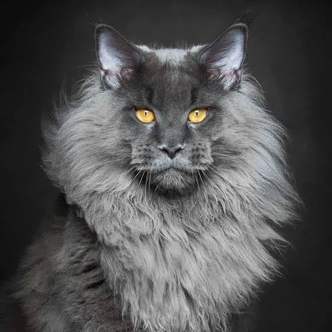

Mengenal Lebih Dekat Kucing Maine Coon:
Kucing Maine Coon dikenal sebagai "raksasa lembut" di dunia kucing. Mereka adalah ras kucing domestik terbesar yang berasal dari negara bagian Maine, Amerika Serikat. Asal-usulnya diselimuti misteri dan legenda, dengan beberapa cerita menyebutkan bahwa mereka adalah keturunan dari kucing berbulu panjang milik Ratu Marie Antoinette yang diselundupkan ke Amerika. Sifatnya yang ramah, cerdas, dan setia membuat mereka menjadi salah satu ras kucing paling populer.
Kembali